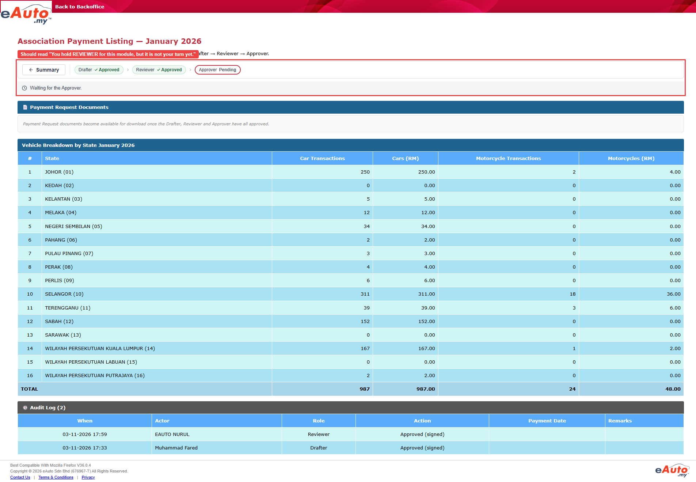

Actual: January 2026 (Drafter Approved, Reviewer Approved, Approver Pending) has no [Approve] / [Reject] and shows the line "Waiting for the Approver."; no #wf-not-your-turn element Expected: [Approve] and [Reject] not available, and Note "Reviewer has already approved. Waiting for the Approver." (TS row 9, 12028_TS33, expected result 1). The "You hold REVIEWER for this module, but it is not your turn yet." line is not in the TS.
Triage: script (plausible) — checks.ts expectNotYourTurn (utils/checks.ts:88-93) asserts #wf-not-your-turn with the text "You hold REVIEWER for this module, but it is not your turn yet."; its own comment tags this wording [unconfirmed: only the APPROVER line is captured]. The saved pages only contain it for the Approver, and the TS never asks for it. Buttons were already absent (that step passed).
Ruled out: Product defect on the buttons: the screenshot shows no [Approve] / [Reject] on the Reviewer Approved month; Wrong month: details show January 2026 with Drafter Approved, Reviewer Approved, Approver Pending; Timing: 14 polls over 5 s found 0 elements and the screenshot shows the page fully rendered; Data: the month state is the one the TS asks for
Row 9 (12028_TS33) Test Objective: Verify the Reviewer cannot act on a month the Reviewer already approved or a fully approved month. Test Steps: 1. Login to BO as Reviewer 2. Click [View] on a month with Reviewer Status Approved and Approver Status Pending 3. Click [View] on a fully approved month Expected Result: Ensure: 1. Details (Reviewer Approved) -> [Approve] and [Reject] disabled; Note "Reviewer has already approved. Waiting for the Approver." shown 2. Details (fully approved) -> [Approve] and [Reject] disabled or not shown; Note "Reviewer has already approved. Waiting for the Approver." shown 3. Summary -> Reviewer Status stays Approved on the fully approved month12028_TS33
Nothing on this. The expected result comes from the TS.

Error: expect(locator).toHaveCount(expected) failedRun error · step "Check "You hold REVIEWER for this module, but it is not your turn yet." is shown"